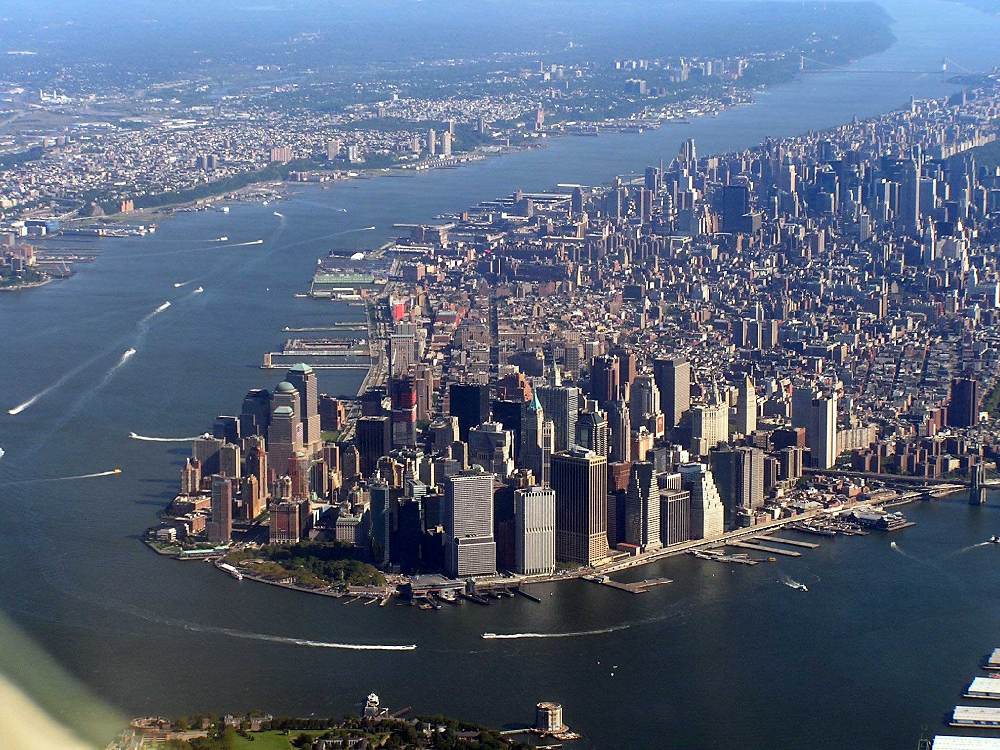
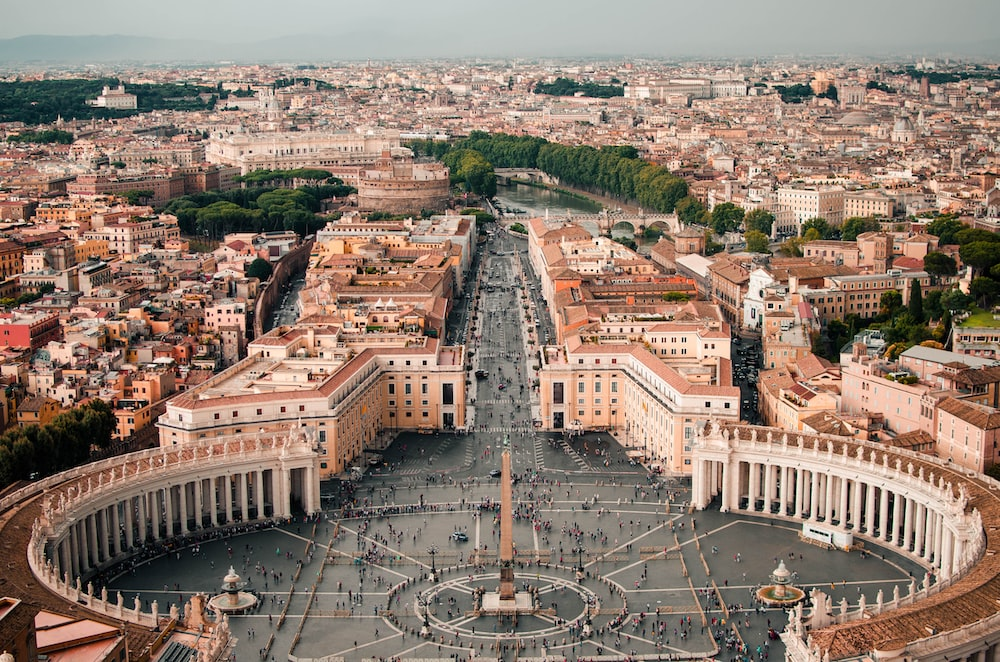
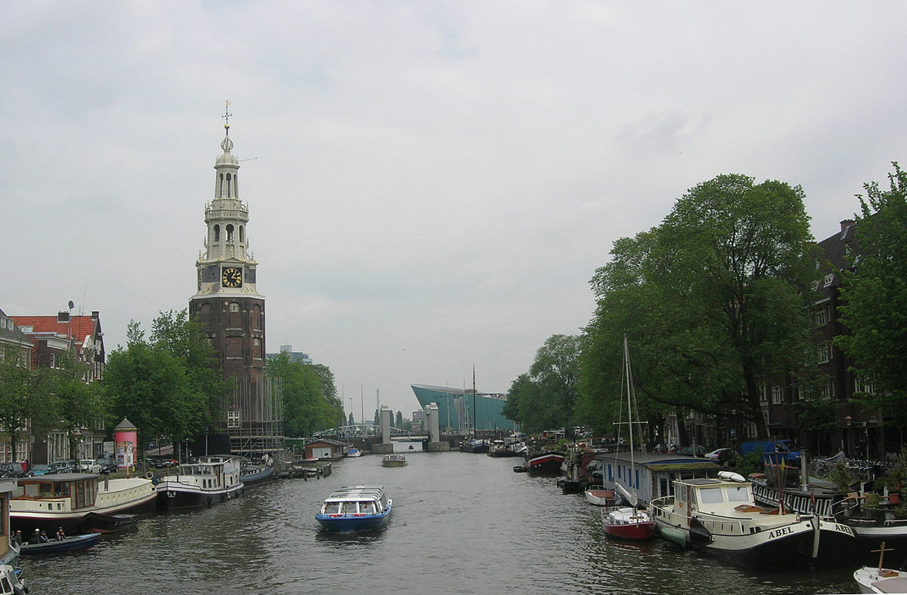
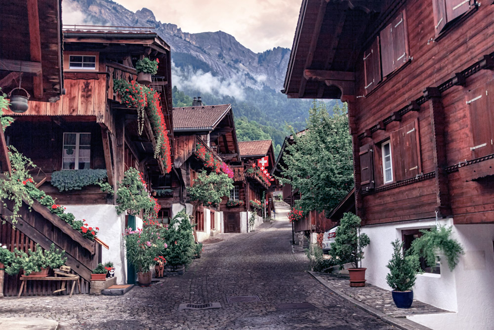

Recomended places
Museums
- Louvre Museum (Paris)

There are plenty of good reasons to visit the Louvre! So many works of art to discover in this fabulous
museum that used to be a palace! So plan your visit in advance to make the most of it. Why not pick one
of our visitor trails to follow a theme-based tour? And when you need a break, where better than the museum's
restful gardens?
- Exploratorium Museum (San Francisco)

The Exploratorium is a public learning laboratory where you can explore the world through science, art, and
human perception.
- Spyscape (New York)

You'll explore hidden worlds, break codes, run surveillance and spot liars - while a system developed with MI6 experts
reveals your personal spy role and profile.
- Smithsonian National Museum of Natural History (Washington)

Delve into the fascinating story of our planet, from its fiery beginnings through billions of years of transformation,
and explore life on Earth through exhibitions and activities, collection objects and research that happens in the lab
and in the field.
- National Anthropology Museum (Mexico)

La sede actual del Museo Nacional de Antropología fue inaugurada el 17 de septiembre de 1964 y, por más de cinco décadas,
ha cumplido la misión de investigar, conservar, exhibir y difundir las colecciones arqueológicas y etnográficas más importantes
del país.
National Parks
- Yellowstone (Canada)

Yellowstone National Park spans an area of 8,983 km2, comprising lakes, canyons, rivers, and
mountain ranges. Yellowstone Lake is one of the largest high-elevation lakes in North America and is centered
over the Yellowstone Caldera,the largest super volcano on the continent. The caldera is considered a dormant volcano.
It has erupted with tremendous force several times in the last two million years.
- Yosemite (San Francisco)

Yosemite National Park is a national park in California.It is bordered on thesoutheast by Sierra National Forest
and on the northwest by Stanislaus National Forest. The park is managed by theNational Park Service and covers 759,620 acres
in four counties. Designated a World Heritage Site in 1984, Yosemiteis internationally recognized for its cliffs, waterfalls,
clear streams, giant sequoia groves, lakes, mountains, meadows, glaciers, and biological diversity. Almost 95 percent of the
park is designated wilderness.Yosemite is one of the largest and least fragmented habitat blocks in the Sierra Nevada.
- Alley of Baobabs (Madagascar)

Alley of the Baobabs, is a prominent group of Grandidier's baobabs (Adansonia grandidieri) lining the unpaved Road No.8 between
Morondava and Belon'i Tsiribihina in the Menabe region of western Madagascar. Its striking landscape draws travelers from around
the world, making it one of the most visited locations in the region. It has been a center of local conservation efforts, and was
granted temporary protected status in July 2007.
- Serengeti (Tanzania)

The Serengeti ecosystem is a geographical region in Africa, spanning the Mara and Arusha Regions of Tanzania.
The protected area within the region includes approximately 30,000 km2 of land, including the Serengeti National Park and several game reserves.
The Serengeti hosts the second largest terrestrial mammal migration in the world, which helps secure it as one of the Seven Natural Wonders of Africa,
and as one of the ten natural travel wonders of the world.
- Fiordland (New Zeland)

Fiordland National Park occupies the southwest corner of the South Island of New Zealand. It is by far the largest of the 13 national parks in New Zealand,
with an area of 12,607 square kilometres, and a major part of the Te Wahipounamu World Heritage Site. The park is administered by the
Department of Conservation.
Cities
- Seoul, Korea

Seoul, officially known as the Seoul Special City, is the capital and largest metropolis of the Republic of Korea (South Korea).
According to the 2020 census, Seoul has a population of 9.9 million people, and forms the heart of the Seoul Capital Area with the
surrounding Incheon metropolis and Gyeonggi province. Considered to be a global city and rated as an Alpha - City by Globalization
and World Cities Research Network ,Seoul was the world's fourth largest metropolitan economy in 2014, following Tokyo, New York City and Los Angeles.
- Manhattan, New York

Manhattan is the most densely populated and geographically smallest of the five boroughs of New York City. The borough is also coextensive
with New York County, one of the original counties of the U.S. state of New York. Located near the southern tip of the State of New York, Manhattan is based
in the Eastern Time Zone and constitutes both the geographical and demographic center of the Northeast megalopolis and the urban core of the New York metropolitan
area, the largest metropolitan area in the world by urban landmass. Over 58 million people live within 250 miles of Manhattan, which serves as
New York City's economic and administrative center, cultural identifier, center of glamor, and the city's historical birthplace
- Rome, Italy

Rome is the capital city of Italy. It is also the capital of the Lazio region, the centre of the Metropolitan City of Rome, and a special comune named
Comune di Roma Capitale. With 2,860,009 residents in 1,285 km2, Rome is the country's most populated comune and the thirdmost populous city in the European Union
by population within city limits. The Metropolitan City of Rome, with a population of 4,355,725 residents, is the most populous metropolitan city in Italy.
Its metropolitan area is the third-most populous within Italy. Vatican City is an independent country inside the city boundaries of Rome, the only existing
example of a country within a city. Rome is often referred to as the City of Seven Hills due to its geographic location, and also as the "Eternal City".
- Amsterdam, Neatherlands

Amsterdam was founded at the mouth of the Amstel River that was dammed to control flooding; the city's name derives from the a local linguistic variation of the word dam.
Originally a small fishing village in the late 12th century, Amsterdam became a major world port during the Dutch Golden Age of the 17th century, when the Netherlands
was an economic powerhouse. Amsterdam was the leading center for finance and trade, as well as a hub of production of secular art. In the 19th and 20th centuries,
the city expanded and many new neighborhoods and suburbs were planned and built. The canals of Amsterdam and the 19-20th century Defence Line of Amsterdam are both on the
UNESCO World Heritage List.
- Brienz, Switzerland

Brienz is a village and municipality on the northern shore of Lake Brienz, at the foot of the Brienzer Rothorn mountain,
and in the Bernese Oberland region of Switzerland. Besides the village of Brienz, the municipality includes the settlements of Kienholz and Axalp.